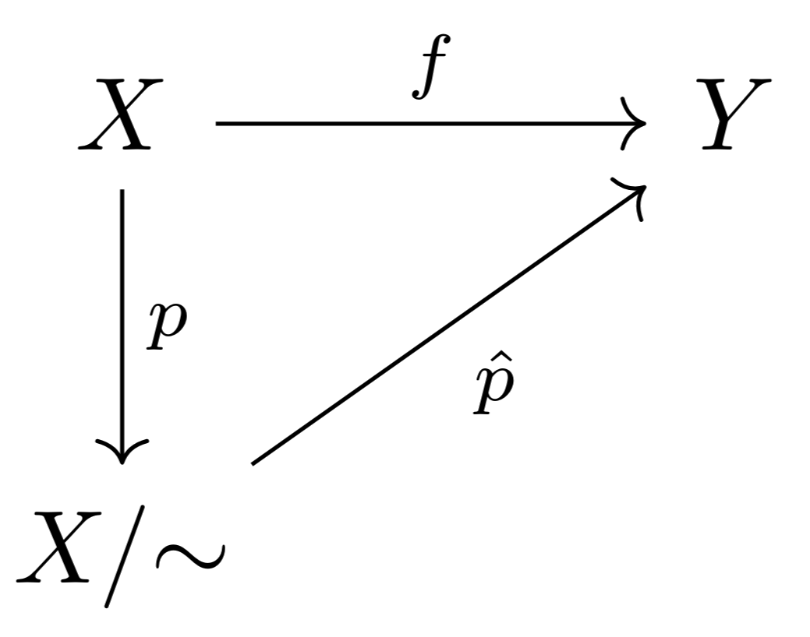
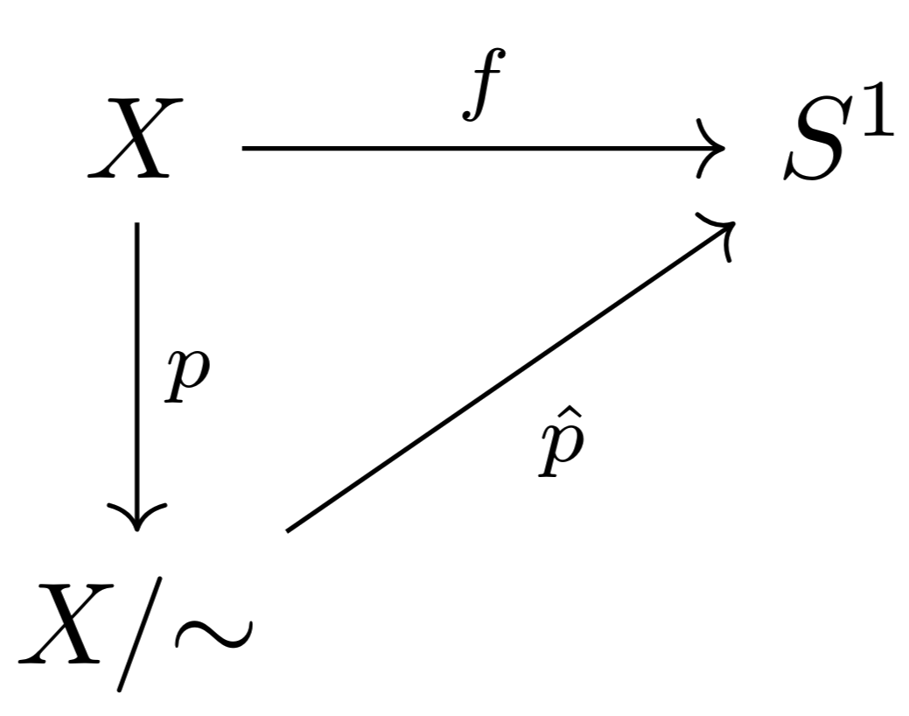

The universal property of quotients
I've known since before starting my undergraduate degree that it's possible to make the circle $S^1$ by 'gluing together' the endpoints of the closed unit interval $[0,1]$. I had even seen more elaborate constructions of this kind, like identifying the sides of the unit rectangle $[0, 1]^2$ in various ways in order to produce a torus, Klein bottle, or real projective plane, from watching Tadashi Tokieda's fantastic online lectures on topology and geometry. I knew that the resulting space was called a 'quotient', but didn't know why.
I also knew there was such a thing called a topological space, which consisted of a set $X$ and a collection $\mathcal{T}$ of subsets of $X$, which were called 'open', and somehow this was the same notion of 'open' as in open intervals in $\mathbb{R}$. I also remember solving the following problem: show that, if the cofinite topology on $X$ has at least three clopen sets, then $X$ is a finite set. I had no idea what this had to do with the Klein bottle.
I'm now at the point where I have gotten far enough through my undergraduate topology course that I can prove the things stated in the first paragraph, from the ground up. This made me sufficiently happy that I wrote this post. I will prove the following result, from my Topology course at the University of St Andrews:
Theorem 1. Let $X = [0, 1]$ be the closed unit interval with the subspace topology from $\mathbb{R}$, and let $\sim$ be the equivalence relation which identifies the points $0$ and $1$. Then $$ X / {\sim} \cong S^1$$ where $S^1$ denotes the unit circle. Specifically, $$S^1 = \set{ (\cos( \theta), \sin (\theta)) \mid \theta \in [0, 2 \pi)}.$$
I'm going to assume the following basic facts from point set topology:
- A closed subspace of a compact space is compact
- A compact subspace of Hausdorff space is closed
- The continuous image of a compact space is compact
We will need the following technical result.
Proposition 2. Let $X$ be a compact space, let $Y$ be a Hausdorff space, and let $f \colon X \to Y$ be a continuous bijection. Then $f$ is a homeomorphism.
Proof. We need to check that the inverse of $f$ is continuous. This is equivalent to checking that, for every open $U \subseteq X$, the set $f(U)$ is open. This, in turn, is equivalent to checking that for every closed $U \subseteq X$, the set $f(U)$ is closed. We will do that. Let $U \subseteq X$ be closed. Since $U$ is a closed subset of a compact space, $U$ is compact. Then, since $f$ is continuous, the set $f(U)$ is compact in $Y$. Since $f(U)$ is a compact subset of a Hausdorff space, $f(U)$ is closed. This completes the proof. $\blacksquare$
The second piece of technology that I will use is the universal property of quotients.
Proposition 2. Let $X$ be a topological space, and let $X / {\sim}$ be a quotient of $X$, with quotient map $p$. Let $Y$ be a topological space, and let $f \colon X \to Y$ be a continuous function which is constant on fibers, i.e., if $x$, $y \in X$ have the same image under the quotient map $p$, then $x$ and $y$ also have the same image under $f$. Then, there exists a unique continuous map $\hat{p}$ which makes the following diagram commute:

The idea behind this is that, given any point $x \in X$, since $f$ is constant on fibers, it only matters where the equivalence class $[x]$ under $\sim$ is sent by $f$, so $f$ 'factors' through the quotient space. But I won't give a detailed proof of this here.
Now we can return to our original three spaces, $X$, $X / {\sim}$, and $S^1$. The quotient map $p \colon X \to X / {\sim}$ takes the form $$p(x) = \set{x} \; \; \text{if} \; \; x \in (0, 1) \; \; \text{and} \; \; p(0) = p(1) = \set{0, 1}.$$ In particular, the fibers are $\set{x}$ for $x \in (0, 1)$ and $\set{0, 1}$. Let $f \colon X \to S^1$ be the function $x \mapsto (\cos(2 \pi x), \sin (2 \pi x))$. This is certainly a continuous map, since both the functions $\cos$ and $\sin$ are continuous. I claim that $f$ is constant on fibers. To check this, I only need to look at the fiber $\set{0, 1}$, since all the others are singletons. Indeed, $$f(0) = (\cos( 0), \sin (0)) = (1, 0) \; \; \text{and} \; \; f(1) = (\cos( 2 \pi) = \sin(2 \pi)) = (1, 0).$$ Since $f$ is continuous, and constant on fibers, the universal property of quotients asserts the existence of a unique continuous map $\hat{p}$ which makes the following diagram commute:

Now, the following is true about this picture:
- By the Heine-Borel theorem, $X = [0, 1]$ is compact, so the quotient $X / {\sim}$ is also compact, being the continuous image of compact space.
- $S^1$ is Hausdorff.
- $\hat{p}$ is a bijection, since every value of $\theta$ corresponding to a point on $S^1$ matches up to a unique fiber in $X / {\sim}$.
Hence, $\hat{p}$ is a continuous bijection from a compact space to a Hausdorff space, so $\hat{p}$ is a homeomorphism, by proposition 2. This shows that $X / {\sim} \cong S^1$, which establishes theorem 1.
This is the same argument used for more elaborate quotients, such as the torus, mentioned in the beginning.